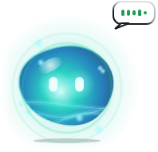
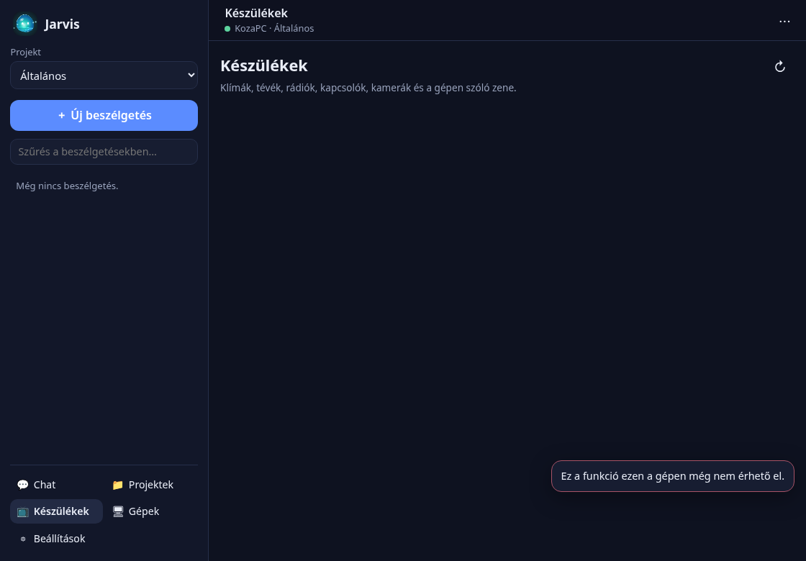
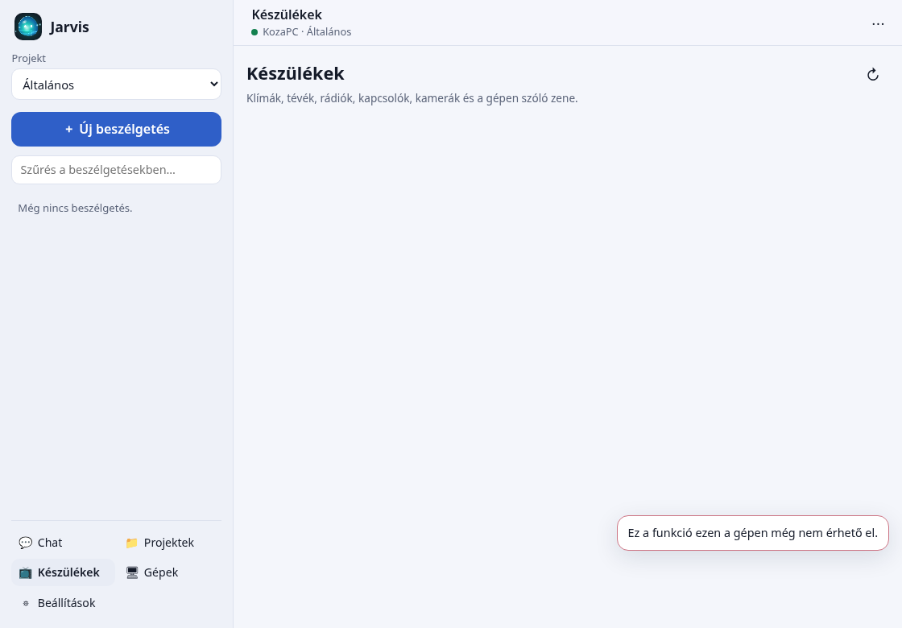

Jarvis answers by text or voice, manages your calendar, watches your mail and controls your home – and everything stays on your machines. No Jarvis cloud, no account.


One app that talks, acts and remembers – with your keys and your data.
Ask in plain language; Jarvis reads and edits files, runs commands (with your permission), searches the web and keeps plans.
Wake word, speech recognition and spoken answers – all running locally on your computer.
Create events, get reminders and a daily briefing; new-mail notifications from Google Calendar and Gmail.
TVs, air conditioners, switches, cameras and radios on your network – by chat or by voice.
Pair your machines: tasks, projects, memory and conversations follow you between them, over encrypted connections.
Any model (local Ollama or a cloud API), MCP servers, routines and a web interface for your phone.
Jarvis finds the devices on your network and lets you control them from the same chat. It runs on your desktop and is reachable from your phone through its own secure web interface.


Version latest – free, for personal use. The app updates itself.
chmod +x) and run it. Self-update works with the AppImage.
Download AppImage
xattr -dr com.apple.quarantine Jarvis.app
All releases and release notes
Jarvis is a personal, non-commercial project. Installers are not yet signed by a platform vendor, so Windows SmartScreen or macOS Gatekeeper may ask for confirmation on first start.
There is no Jarvis server: the developer does not collect, receive or store your data. Google data is used only to provide the calendar and mail features you ask for.
With the user's permission, Jarvis connects to their Google account to show, create and update events in Google Calendar and to notify about newly arrived email in Gmail (message metadata only: sender, subject, date, labels).